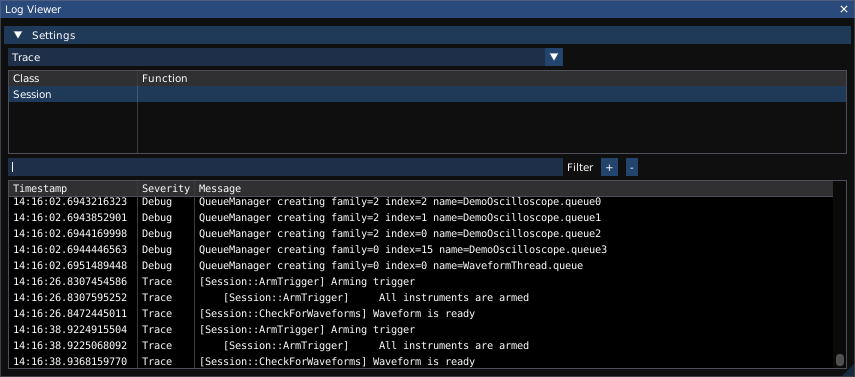

The Lab Notes dialog allows you to take notes on your experimental setup. It contains two tabs: “setup notes" and "general notes".
The contents of the Setup Notes tab are displayed on the Speed Bump dialog when loading a session file. The General Notes are only displayed within the Lab Notes dialog and are intended purely as a place for recording interesting observations made during the experiment.
Minimal Markdown syntax (headings and bullets) is currently supported.1
Lab notes are saved as Markdown files in the data directory for the session and can be opened in any text editor or Markdown viewer. Note that they are overwritten each time the session is saved, so you should not modify them using an external tool while the session is open in ngscopeclient or your changes may be lost.
The Log Viewer dialog provides an alternate way to view log messages sent to stdout / stderr, which may be useful for debugging if the application was launched from a desktop icon or similar and there is no access to the console.
It can be found under the Window | Log Viewer menu.

Expanding the “settings" panel allows log messages to be filtered to show more or less detail.
Additionally, if “trace" verbosity is selected, you can type class and/or function names using the classname, classname::function, or ::globalfunction syntax in order to enable high-verbosity messages printed via LogTrace().

The Performance Metrics dialog displays statistics on performance of rendering, waveform acquisition, and signal processing. This data is primarily intended for developers comparing before/after performance of optimizations and code changes.
It can be found under the Window | Performance Metrics menu.

Displays render loop framerate, monitor refresh rate, total time spent last frame in the rasterization and tone mapping shaders, and the number of vertices and indices drawn as Vulkan geometry. Note that waveforms are drawn by a compute shader and do not contribute towards the vertex/index totals, other than a single textured rectangle used for displaying the shader output.
Number of filter blocks in the current graph, and run time for the most recent evaluation of the filter graph.
Displays the acquisition rate, in waveforms per second. This data is collected using a rather simple mechanism and may not be usefully accurate if multiple trigger groups are in use.
Additionally, this section displays the number of pending waveforms for each instrument (waveforms which have been acquired but not yet passed to the filter graph). This number should normally be flickering between zero and one if acquisition is active and zero otherwise; larger values indicate that the instrument is supplying data faster than ngscopeclient can process it.
Displays the total amount of available pinned memory (CPU-side memory eligible to be shared with the GPU) and local memory (memory attached to the GPU), as well as the amount of each currently in use.
The Preferences dialog allows you to configure various application settings which are not specific to a particular experimental setup. It can be found under the Setup | Preferences menu.

This section allows you to configure fonts, colors, and other display settings for the application.
This section allows you to configure default configurations for various instrument drivers.
Force 16 bit mode (default on): Always use 16-bit format for downloading data from the instrument, even if it only has an 8-bit ADC. This doubles the amount of network bandwidth required and may reduce waveforms-per-second performance, but provides smoother waveforms.
Note that Teledyne LeCroy scopes perform DSP flatness corrections between the ADC and the data presented via the API, meaning that even if the hardware only has an 8-bit ADC, downloading data with 16-bit precision will result in improved accuracy.
This section provides settings allowing power vs performance tradeoffs. The default settings are appropriate for a desktop or laptop running on AC power; if running on a laptop with battery power you may wish to tune these to extend battery lifespan.
Event loop mode: Controls the operating mode for the main application event loop.
The Speed Bump dialog is displayed when loading a session file online (reconnecting to and reconfiguring hardware), prior to committing changes to the instrument, if:
This is intended as a safeguard to prevent damaging hardware by accidentally loading the wrong session file. It also provides an opportunity to confirm that you have re-created the original experimental setup exactly if you are switching a lab bench between multiple projects and using saved sessions to restore instrument state.
Pressing the Abort button cancels loading of the session without applying any of the potentially dangerous changes. The instruments may be partially reconfigured in this state, as some changes (such as sample rate or memory depth configuration) are always safe to make and thus may have been applied prior to the warning being displayed.
Pressing the Proceed button allows ngscopeclient to proceed with loading the session and reconfiguring hardware. You must check the “I have reviewed the instrument configuration" box in order to enable the Proceed button.

1Images and links are supported by the Markdown renderer library but the integration to properly use them is not yet finished; tables are not supported but this will likely be added in the future.